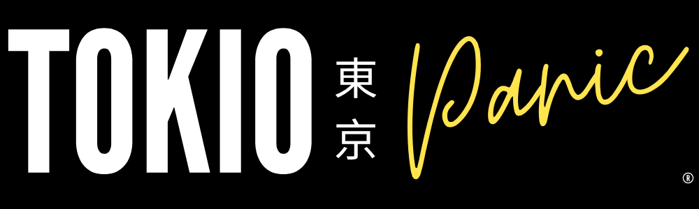
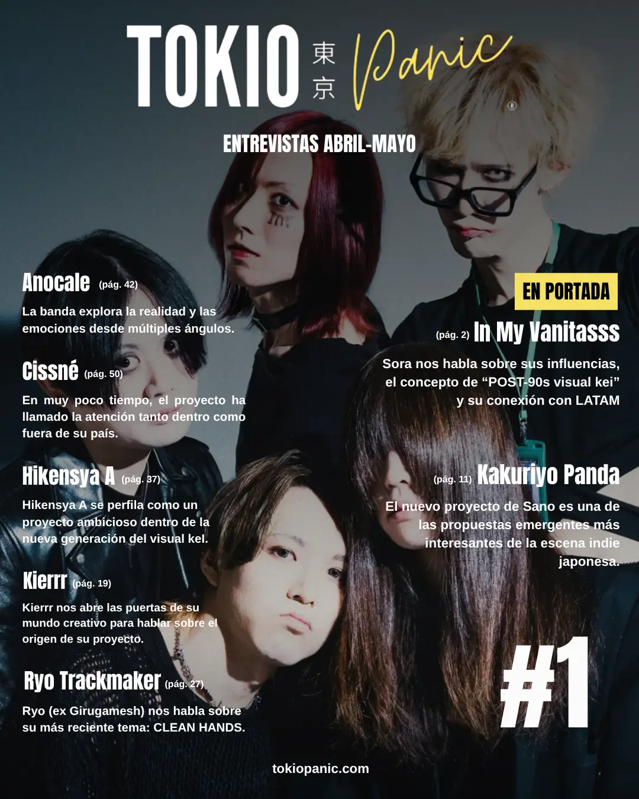

Una recopilación de las entrevistas más profundas realizadas por TOKIO PANIC,
el análisis de la escena y las voces que mueven el visual kei.

DescargarSora nos habla sobre sus influencias, el concepto de "POST-90s visual kei" y su conexión con LATAM.
Leer entrevista →El nuevo proyecto de Sano (ex An Cafe) es una de las propuestas emergentes más interesantes de la escena indie japonesa.
Leer entrevista →Kierrr nos abre las puertas de su mundo creativo para hablar sobre el origen de su proyecto.
Leer entrevista →Ryo (ex Girugamesh) nos habla sobre su más reciente tema: CLEAN HANDS.
Leer entrevista →Hikensya A se perfila como un proyecto ambicioso dentro de la nueva generación del visual kei.
Leer entrevista →En muy poco tiempo, el proyecto ha llamado la atención tanto dentro como fuera de su país.
Leer entrevista →